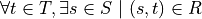
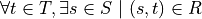
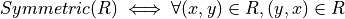
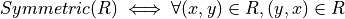

07a. Relations¶
A relation in nothing but a subset of (the tuples in) a product set. A table such as the one just described, will, in practice, usually not have a row with every possible combination of names, birthdays, and SSNs. In other words, it won’t be the entire product of the sets from which the field values drawn. Rather, it will usually contain a small subset of the product set.
In mathematical writing, we will thus often see a sentence of the
form, Let  be a (binary) relation on S
and T. All this says is that R is some subset of the set of all
tuples in the product set of S and T. If S = { hot, cold } and
T = { cat, dog }, then the product set is { (hot, cat), (hot, dog),
(cold, cat), (cold, dog) }, and a relation on S and T is any
subset of this product set. The set, { (hot, cat), (cold, dog) } is
thus one such relation on S and T.
be a (binary) relation on S
and T. All this says is that R is some subset of the set of all
tuples in the product set of S and T. If S = { hot, cold } and
T = { cat, dog }, then the product set is { (hot, cat), (hot, dog),
(cold, cat), (cold, dog) }, and a relation on S and T is any
subset of this product set. The set, { (hot, cat), (cold, dog) } is
thus one such relation on S and T.
Here’s an exercise. If S and T are finite sets, with cardinalities |S| = n and |T| = m, how many relations are there over S and T? Hint: First, how many tuples are in the product set? Second, how many subsets are there of that set? For fun, write a little Dafny program that takes two sets of integers as arguments as return the number of relations over them. Write another function that takes two sets and returns the set of all possible relations over the sets. Use a set comprehension expression rather than writing a while loop. Be careful: the number of possible relations will be very large even in cases where the given sets contain only a few elements each.
Binary Relations¶
Binary relations, which play an especially important role in
mathematics and computer science, are relations over just 2
sets. Suppose is a binary relation on
S and T. Then S is called the domain of the relation, and T
is called its co-domain. That is, a binary relation is a subset of
the ordered pairs in a product of the given domain and codomain sets.
If a particular tuple, (s, t) is an element of such a relation, R, we will say R is defined for the value, s, and that R achieves the value, t. The support of a relation is the subset of values in the domain on which it is defined. The range of a relation is the subset of co-domain values that it achieves.
For example, if S = { hot, cold } and T = { cat, dog }, and R = *{ (hot, cat), (hot, dog) }, then the domain of R is S; the co-domain of R is T; the support of R is just { hot } (and R is thus not defined for the value cold); and the range of R is the whole co-domain, T.
The everyday functions you have studies in mathematics are binary relations, albeit usually infinite ones. For example, the square function, that associates every real number with its square, can be understood as the infinite set of ordered pairs of real numbers in which the second is the square of the first. Mathematically this is :{ (x, y) | y = x^2 }:`, where we take as implicit that x and y range over the real numbers. Elements of this set include the pairs, (-2, 4) and (2, 4).
The concept of square roots of real numbers is also best understood as a relation. The tuples are again pairs of real numbers, but now the elements include tuples, (4, 2) and (4, -2).
Methods for Applying Relations¶
Like functions, relations can be applied to arguments. Rather than single element values, such applications return sets of elements, as relations are in general not single valued. The set of values returned when a relation is applied to an argument is called the image of that element under the given relation.
The image of a domain value under a relation is the set of values to which the relation
maps that domain element. This method provides this behavior. It computes and returns the image of a domain element under this relation. It requires that the given value actually be in the domain set. Note that if the relation is not defined for an element in its domain, the image of that value will simply be the empty set.
function method image(k: Stype): (r: set<Stype>)
reads this;
reads r;
requires Valid();
requires k in dom();
ensures Valid();
{
r.image(k)
}
The image of a set of domain elements is the union of the images of the elements in that set. A precondition for calling this function is that all argument values (in ks) be in the domain of this relation.
function method imageOfSet(ks: set<Stype>): (r: set<Stype>)
reads this;
reads r;
requires Valid();
requires forall k :: k in ks ==> k in dom();
ensures Valid();
{
r.imageOfSet(ks)
}
Given an element in the range of a relation, its preimage is the set of elements in in the domain that map to it. This function returns the preimage of a given value in the range of this relation. It is a precondition that v be in the codomain of this relation.
function method preimage(v: Stype): (r: set<Stype>)
reads this;
reads r;
requires Valid();
requires v in codom();
ensures Valid();
{
r.preimage(v)
}
Compute image of a domain element under this relation.
function method preimageOfSet(vs: set<Stype>): (r: set<Stype>)
reads this;
reads r;
requires Valid();
requires forall v :: v in vs ==> v in codom();
ensures Valid();
{
r.preimageOfSet(vs)
}
A relation is said to be defined for a given domain element, k, if the relation maps k to at least one value in the codomain.
predicate method isDefinedFor(k: Stype)
reads this;
reads r;
requires Valid();
requires k in dom();
ensures Valid();
{
r.isDefinedFor(k)
}
If this relation is a function, then we can
"apply" it to a single value, on which this
function is defined, to get a single result.
method apply(k: Stype) returns (ret: Stype)
requires Valid();
requires k in dom(); // only ask about domain values
requires isFunction(); // only ask if this is a function
requires isTotal(); // that is defined for every value
requires isDefinedFor(k); // and that is non-empty
// ensures ret in image(k); // want |image(k)| == 1, too
ensures Valid();
{
ret := r.fimage(k);
}
Inverse¶
The inverse of a given binary relation is simply the set of tuples
formed by reversing the order of all of the given tuples. To put this
in mathematical notation, if R is a relation, its inverse, denoted
 , is
, is  . You can see this
immediately in our example of squares and square roots. Each of these
relations is the inverse of the other. One contains the tuples, (-2,
4), (2, 4), while the other contains (4, 2), (4, -2).
. You can see this
immediately in our example of squares and square roots. Each of these
relations is the inverse of the other. One contains the tuples, (-2,
4), (2, 4), while the other contains (4, 2), (4, -2).
It should immediately be clear that the inverse of a function is not always also a function. The inverse of the square function is the square root relation, but that relation is not itself a function, because it is not single valued.
Here’s a visual way to think about these concept. Consider the graph of the square function. Its a parabola that opens either upward in the y direction, or downward. Now select any value for x and draw a vertical line. It will intersect the parabola at only one point. The function is single-valued.
The graph of a square root function, on the other hand, is a parabola that opens to the left or right. So if one draws a vertial line at some value of x, either the line fails to hit the graph at all (the square root function is not defined for all values of x), or it intersects the line at two points. The square root “function” is not single-valued, and isn’t really even a function at all. (If the vertical line hits the parabola right at its bottom, the set of points at which it intersects contains just one element, but if one takes the solution set to be a multi-set, then the value, zero, occurs in that set twice.)
A function whose inverse is a function is said to be invertible. The function, f(x) = x (or y = x if you prefer) is invertible in this sense. In fact, its inverse is itself.
Exercise: Is the cube root function invertible? Prove it informally.
Exercise: Write a definition in mathematical logic of what precisely it means for a function to be invertible. Model your definition on our definition of what it means for a relation to be single valued.
Functions: Single-Valued Relations¶
A binary-relation is said to be single-valued if it does not have
tuples with the same first element and different second elements. A
single-valued binary relation is also called a function. Another
way to say that R is single valued is to say that if (x, y) and
(x, z) are both in R then it must be that y and z are the same
value. Otherwise the relation would not be single-valued! To be more
precise, then, if , is single valued
relation, then  .
.
As an example of a single-valued relation, i.e., a function, consider the square. For any given natural number (in the domain) under this function there is just a single associated value in the range (the square of the first number). The relation is single-valued in exactly this sense. By contrast, the square root relation is not a function, because it is not single-valued. For any given non-negative number in its domain, there are two associated square roots in its range. The relation is not single-valued and so it is not a function.
There are several ways to represent functions in Dafny, or any other programming language. One can represent a given function implicity: as a program that computes that function. But one can also represent a function explicitly, as a relation: that is, as a set of pairs. The (polymorphic) map type in Dafny provides such a representation.
A “map”, i.e., a value of type map<S,T> (where S and T are type parameters), is to be understood as an explicit representation of a single-valued relation: a set of pairs: a function. In addition to a mere set of pairs, this data type also provides helpful functions and a clever representation underlying representation that both enforce the single-valuedness of maps, and that make it very efficient to look up range values given domain values where the map is defined, i.e., to apply such a function to a domain value (a “key”) to obtained the related range value.
Given a Dafny map object, m, of type map<S,T>, one can obtain the set of values of type S for which the map is defined as m.Keys(). One can obtain the range, i.e., the set of values of type T that the map maps to, as m.Values(). One can determine whether a given key, s of type S is defined in a map with the expression, s in m.
Exercise: Write a method (or a function) that when given a map<S,T> as an argument returns a set<(T,S)> as a result where the return result represents the inverse of the map. The inverse of a function is not necessarily a function so the inverse of a map cannot be represented as a map, in general. Rather, we represent the inverse just as a set of (S,T) tuples.
Exercise: Write a pure function that when given a set of ordered pairs returns true if, viewed as a relation, the set is also a function, and that returns false, otherwise.
Exercise: Write a function or method that takes a set of ordered pairs with a pre-condition requiring that the set satisfy the predicate from the preceding exercise and that then returns a map that contains the same set of pairs as the given set.
Exercise: Write a function that takes a map as an argument and that returns true if the function that it represents is invertible and that otherwise returns false. Then write a function that takes a map satisfying the precondition that it be invertible and that in this case returns its inverse, also as a map.
Properties of Functions¶
We now introduce essential concepts and terminology regarding for distinguishing essential properties and special cases of functions.
Total vs Partial¶
A function is said to be total if every element of its domain appears as the first element in at least one tuple, i.e., its support is its entire domain. A function that is not total is said to be partial. For example, the square function on the real numbers is total, in that it is defined on its entire real number domain. By contrast, the square root function is not total (if it domain is taken to be the real numbers) because it is not defined for real numbers that are less than zero.
Note that if one considers a slightly different function, the square root function on the non-negative real numbers the only difference being in the domainm then this function is total. Totality is thus relative to the specified domain. Here we have two functions with the very same set of ordered pairs, but one is total and the other is not.
Exercises: Is the function y = x on the real numbers total? Is the log function defined on the non-negative real numbers total? Answer: no, because it’t not defined at x = 0. Is the SSN function, that assigns a U.S. Social Security Number to every person, total? No, not every person has a U.S. Social Security number.
Implementing partial functions as methods or pure function in software presents certain problems. Either a pre-conditions has to be enforced to prevent the function or method being called with a value for which it’s not defined, or the function or method needs to be made total by returning some kind of error value if it’s called with such a value. In this case, callers of such a function are obligated always to check whether some validfunction value was returned or whether instead a value was returned that indicates that there is no such value. Such a value indicates an error in the use of the function, but one that the program caught. The failure of programmers systematically to check for error returns is a common source of bugs in real software.
Finally we note that by enforcing a requirement that every loop and recursion terminates, Dafny demands that every function and method be total in the sense that it returns and that it returns some value, even it it’s a value that could flag an error.
When a Dafny total function is used to implement a mathematical function that is itself partial (e.g., log(x) for any real number, x), the problem thus arises what to return for inputs for which the underlying mathematical function is not defined. A little later in the course we will see a nice way to handle this issue using what are called option types. An option type is like a box that contains either a good value or an error flag; and to get a good value out of such a box, one must explicitly check to see whether the box has a good value in it or, alternatively, and error flag.
Injective¶
A function is said to be injective if no two elements of the domain are associated with the same element in the co-domain. (Note that we are limiting the concept of injectivity to functions.) An injective function is also said to be one-one-one, rather than many-to-one.
Take a moment to think about the difference between being injective and single valued. Single-valued means no one element of the domain “goes to” *more than one” value in the range. Injective means that “no more than one” value in the domain “goes to” and one value in the range.
Exercise: Draw a picture. Draw the domain and range sets as clouds with points inside, representing objects (values) in the domain and co-domain. Represent a relation as a set of arrows that connect domain objects to co-domain objects. The arrows visually depict the ordered pairs in the relation. What does it look like visually for a relation to be single-valued? What does it look like for a relation to be injective?
The square function is a function because it is single-valued, but it is not injective. To see this, observe that two different values in the domain, -2 and 2, have the same value in the co-domain: 4. Think about the graph: if you can draw a horizontal line for any value of y that intersects the graph at multiple points, then the points at which it intersects correspond to different values of x that have the same value under the relation. Such a relation is not injective.
Exercises: Write a precise mathematical definition of what it means for a binary relation to be injective. Is the cube root function injective? Is f(x) = sin(x) injective?
An Aside: Injectivity in Type Theory¶
As an aside, we note that the concept of injectivity is essential in type theory. Whereas set theory provides a universally accepted axiomatic foundation for mathematics, type theory is of increasing interest as alternative foundation. It is also at the very heart of a great deal of work in programming languages and software verification.
Type theory takes types rather than sets to be elementary. A type in type theory comprises a collection of objects, just as a set does in set theory. But whereas in set theory, an object can be in many sets, in type theory, and object can have only one type.
The set of values of a given type is defined by a set of constants and functions called constructors. Constant constructors define what one can think of as the smallest values of a type, while constructors that are functions provide means to build larger values of a type by *packaging up” smaller values of the same and/or other types.
As a simple example, one might say that the set of values of the type, Russian Doll, is given by one constant constructor, SolidDoll and by one constructor function, NestDoll that takes a nested doll as an argument (the solid one or any other one built by NestDoll itself). Speaking intuitively, this constructor function does nothing other than package up the smaller nest doll it was given inside a “box” labelled NestDoll. One can thus obtain a nested doll either as the constant SolidDoll or by applying the NestDoll constructor some finite number of times to smaller nested dolls. Such a nesting will always be finitely deep, with the solid doll at the core.
A key idea in type theory is that constructors are injective. Two values of a given type built by different constructors, or by the same constructor with different arguments, are always different. So, for example, the solid doll is by definition unequal to any doll built by the NestDoll constructor; and a russian doll nested two levels deep (built by applying NestDoll to an argument representing a doll that is nested one level deep)is necessarily unequal to a russian doll one level deep (built by applying NestDoll to the solid doll).
Running this inequality idea in reverse, we can conclude that if two values of a given type are known to be equal, then for sure they were constructed by the same constructor taking the same arguments (if any). It turns out that knowing such a fact, rooted in the injectivity of constructors is often essential to completing proofs about programs using type theory. But more on this later.
Surjective¶
A function is said to be surjective if for every element, t, in
the co-domain there is some element, s in the domain such that
(s,t) is in the relation. That is, the range range of the function
is its whole co-domain. Mathematically, a relation  is surjective if .
is surjective if .
In the intuitive terms of high school algebra, a function involving x and y is surjective if for any given y value there is always some x that “leads to” that y. The square function on the real numbers is not surjective, because there is no x that when squared gets one to y = -1.
Exercise: Is the function, f(x) = sin(x), from the real numbers (on the x-axis) to real numbers (on the y-axis) surjective? How might you phrase an informal but rigorous proof of your answer?
Exercise: Is the inverse of a surjective function always total? How would you “prove” this with a rigorous, step-by-step argument based on the definitions we’ve given here? Hint: It is almost always useful to start with definitions. What does it mean for a relation to be total? What does it mean for one relation to be the inverse of another? How can you connect these definitons to show for sure that your answer is right?
Bijective¶
A function is said to be bjective if it is also both injective and surjective. Such a function is also often called a bijection.
Take a moment to think about the implications of being a bijection.
Consider a bijective relation,  R is
total, so there is an arrow from every s in S to some t in
T. R is injective, so no two arrows from any s in s ever hit
the same t in T. An injection is one-to-one. So there is exactly
one t in T hit by each s in S. But R is also surjective, so
every t in T is hit by some arrow from S. Therefore, there has
to be exactly one element in t for each element in s. So the sets
are of the same size, and there is a one-to-one correspondence between
their elements.
R is
total, so there is an arrow from every s in S to some t in
T. R is injective, so no two arrows from any s in s ever hit
the same t in T. An injection is one-to-one. So there is exactly
one t in T hit by each s in S. But R is also surjective, so
every t in T is hit by some arrow from S. Therefore, there has
to be exactly one element in t for each element in s. So the sets
are of the same size, and there is a one-to-one correspondence between
their elements.
Now consider some t in T. It must be hit by exactly one arrow from
S, so the inverse relation, , from T to S, must
also single-valued (a function). Moreover, because R is surjective,
every t in T is hit by some s in S, so the inverse relation is
defined for every t in T. It, too, is total. Now every arrow from
any s to some t leads back from that t to that s, so the
inverse And it’s also (and because R is total, there is such an
arror for every s in S), the inverse relation is surjective (it
covers all of S).
Exercise: Must the inverse of a bijection be one-to-one? Why or why not? Make a rigorous argument based on assumptions derived from our definitions.
Exercise: Must a bijective function be invertible? Make a rigorous argument.
Exercise: What is the inverse of the inverse of a bijective function, R. Prove it with a rigorous argument.
A bijection estabishes an invertible, one-to-one correspondence between elements of two sets. Bijections can only be established between sets of the same size. So if you want to prove that two sets are of the same size, it sufficies to show that one can define a bijection between the two sets. That is, one simply shows that there is some function that covers each element in each set with arrows connecting them, one-to-one in both directions.
Exercise: Prove that the number of non-negative integers (the
cardinality of ), is the same as the number of
non-negative fractions (the cardinality of  ).
).
Exercise: How many bijective relations are there between two sets of cardinality k? Hint: Pick a first element in the first set. There are n ways to map it to some element in the second set. Now for the second element in the first set, there are only (n-1) ways to pair it up with an element in the second set, as one cannot map it to the element chosen in the first step (the result would not be injective). Continue this line of reasoning until you get down to all elements having been mapped.
Exercise: How many bijections are there from a set, S, to itself? You can think of such a bijection as a simple kind of encryption. For example, if you map each of the 26 letters of the alphabet to some other letter, but in a way that is unambiguous (injective!), then you have a simple encryption mechanisms. How many ways can you encrypt a text that uses 26 letters in this way? Given a cyphertext, how would you recover the original plaintext?
Exercise: If you encrypt a text in this manner, using a bijection, R and then encrpty the resulting cyphertext using another one T, can you necessarily recover the plaintext? How? Is there a single bijection that would have accomplished the same encryption result? Would the inverse of that bijection effectively decrypt messages?
Exercise: Is the composition of any two bijections also a bijection? If so, can you express its inverse in terms of the inverses of the two component bijections?
Exercise: What is the identity bijection on the set of 26 letters?
Question: Are such bijections commutative? That is, you have two of them, say R and T, is the bijection that you get by applying R and then T the same as the bijection you get by applying T and then R? If your answer is no, prove it by giving a counterexample (e.g., involving bijections on a small set). If your answer is yes, make rigorous argument.
Programming exercise: Implement encryption and decryption schemes in Dafny using bijections over the 26 capital letters of the English alphabet.
Programming exercise: Implement a compose function in Dafny that takes two pure functions, R and T, each implementing a bijection between the set of capital letters and that returns a pure function that when applied has the effect of first applying T then applying R.
Properties of Relations¶
Functions are special cases of (single-valued) binary relations. The properties of being partial, total, injective, surjective, bijective are generally associated with functions, i.e., with relations that are already single-valued. Now we turn to properties of relations more generally.
Reflexive¶
Consider a binary relation on a set with itself. That is, the domain
and the co-domain are the same sets. A relation that maps real numbers
to real numbers is an example. It is a subset of  . The friends relation on a social network site
that associates people with people is another example.
. The friends relation on a social network site
that associates people with people is another example.
Such a relation is said to be reflexive if it associates every element with itself. The equality relation (e.g., on real numbers) is the “canonical” example of a reflexive relation. It associates every number with itself and with no other number. The tuples of the equality relation on real numbers thus includes (2.5, 2.5) and (-3.0, -3.0)* but not (2.5, -3.0).
In more mathematical terms, consider a set S and a bindary relation,
R, on S*S,  R is reflexive, which
we can write as Reflexive(R), if and only if for every e in S,
the tuple (e,e) is in R. Or to be rigorous about it,
R is reflexive, which
we can write as Reflexive(R), if and only if for every e in S,
the tuple (e,e) is in R. Or to be rigorous about it,

Exercise: Is the function, y = x, reflexive? If every person loves themself, is the loves relation reflexive? Is the less than or equals relation reflexive? Hint: the tuples (2,3) and (3,3) are in this relation becaue 2 is less than or equal to 3, and so is 3, but (4,3) is not in this relation, because 4 isn’t less than or equal to 3. Is the less than relation reflexive?
Symmetric¶
A binary relation, R, on a set S is said to be symmetric if whenever the tuple (x,y) is in R, the tuple, (y,x) is in R as well. On Facebook, for example, if Joe is “friends” with “Tom” then “Tom” is necessarily also friends with “Joe.” The Facebook friends relation is thus symmetric in this sense.
More formally, if R is a binary relation on a set S, i.e., given
 , then .
, then .
Question: is the function y = x symmetric? How about the square function? In an electric circuit, if a conducting wire connects terminal T to terminal Q, it also connects terminal Q to terminal T in the sense that electricity doesn’t care which way it flows over the wire. Is the connects relation in electronic circuits symmetric? If A is near B then B is near A. Is nearness symmetric? In the real work is the has-crush-on relation symmetric?
Transitive¶
Given a binary relation , R is said to
be transitive if whenever (x,y) is in R and (y,z) is in R,
then (x,z) is also in R. Formally,  .
.
Exercise: Is equality transitive? That is, if a = b and b = c it is also necessarily the case that a = c? Answer: Sure, any sensible notion of an equality relation has this transitivity property.
Exercise: What about the property of being less than? If a < b and b < c is it necessarily the case that a < c? Answer: again, yes. The less than, as well as the less than or equal, and greater then, and the greater than or equal relations, are all transitive.
How about the likes relation amongst real people. If Harry likes Sally and Sally likes Bob does Harry necesarily like Bob, too? No, the human “likes” relation is definitely not transitive. (And this is the cause of many a tragedy.)
Equivalence¶
Finally (for now), a relation is said to be an equivalence relation
if it is reflexive, transitive, and symmetric. Formally, we can write
this property as a conjunction of the three individual properties:
 . Equality is the canonical example of an equivalence
relation: it is reflexive (x = x), symmetric (if x = y then y =
x) and transitive (if x = y and y = z then x = z.).
. Equality is the canonical example of an equivalence
relation: it is reflexive (x = x), symmetric (if x = y then y =
x) and transitive (if x = y and y = z then x = z.).
An important property of equivalence relations is that they divide up a set into subsets of equivalent values. As an example, take the equivalence relation on people, has same birthday as. Clearly every person has the same birthday as him or herself; if Joe has the same birthday as Mary, then Mary has the same birthday as Joe; and if Tom has the same birthday as mary then Joe necessarily also has the same birthday as Tom. This relation thus divides the human population into 366 equivalence classes. Mathematicians usually use the notation a ~ b to denote the concept that a is equivalent to b (under whatever equivalence relation is being considered).
Basic Order Theory¶
Ordering is a relational concept. When we say that one value is less than another, for example, we are saying how those values are related under some binary relation. For example, the less than relation on the integers is an ordering relation. We sometimes call such a relation as an order.
There are many different kinds of orders. They include total orders, partial orders, pre-orders. In this section we precisely define what properties a binary relation must have to be considered as belonging to one or another of these categories. The study of such relations is called order theory.
Preorder¶
A relation is said to be a preorder if it is reflexive and transitive. That is, every element is related to itself, and if e1 is related to e2 and e2 to e3, then e1 is also related to e3.
A canonical example of a preorder is the reachability relation for a directed graph. If every element reaches itself and if there’s also a direct or indirect path from a to b then a is said to reach b.
Subtyping relations in object-oriented programming languages are also often preorders. Every type is a subtype of itself, and if A is a subtype of B, B of C, then A is also a subtype of C.
Given any relation you can obtain a preorder by taking its reflexive and transitive closure.
Unlike a partial order (discussed below), a preorder in general is not antisymmetric. And unlike an equivalence relation, a preorder is not necesarily symmetric.
predicate method isPreorder()
reads this;
reads r;
requires Valid();
ensures Valid();
{
isReflexive() && isTransitive()
}
Partial Order¶
A binary relation is said to be a partial order if it is a preorder (reflexive and transitive) and also anti-symmetric. Recall that anti-symmetry says that the only way that both (x, y) and (y, x) can be in the relation at once is if x==y. The less-than-or-equal relation on the integers is anti-symmetric in this sense.
Another great example of a partial order is the “subset-of” relation on the powerset of a given set. It’s reflexivem as every set is a subset of itself. It’s anti-symmetric because if S is a subset of T and T is a subset of S then it must be that T=S. And it’s transitive, because if S is a subset of T and T a subset of R then S must also be a subset of R.
This relation is a partial order in that not every pair of subsets of a set are “comparable,” which is to say it is possible that neither is a subset of the other. The sets, {1, 2} and {2, 3}, are both subsets of the set, {1, 2, 3}, for example, but neither is a subset of the other, so they are not comparable under this relation.
predicate method isPartialOrder()
reads this;
reads r;
requires Valid();
ensures Valid();
{
isPreorder() && isAntisymmetric()
}
Total Order¶
The kind of order most familiar from elementary mathematics is a “total” order. The natural and real numbers are totally ordered under the less than or equals relation, for example. Any pair of such numbers is “comparable.” That is, given any two numbers, x and y, either (x, y) or (y, x) is (or both are) in the “less than or equal relation.”
A total order, also known as a linear order, a simple order, or a chain, is a partial order with the additional property that any two elements, x and y, are comparable. This pair of properties arranges the set into a fully ordered collection.
A good example is the integers under the less than or equal operator. By contrast, subset inclusion is a partial order, as two sets, X and Y, can both be subsets of (“less than or equal to”) a set Z, with neither being a subset of the other.
predicate method isTotalOrder()
reads this;
reads r;
requires Valid();
ensures Valid();
{
isPartialOrder() && isTotal()
}
Additional Properties of Relations¶
Total Relation¶
We now define what it means for a binary relation to be “total,” also called “complete.” NOTE! The term, “total”, means something different when applied to binary relations, in general, than when it is applied to the special case of functions. A function is total if for every x in S there is some y to which it is related (or mapped, as we say). By contrast, a binary relation is said to be total, or complete, if for any* pair of values, x and y in S, either (or both) of (x, y) or (y, x) is in the relation.
A simple example of a total relation is the less than or equals relation on integers. Given any two integers, x and y, it is always the case that either x <= y or y <= x, or both if they’re equal.
Another example of a total binary relation is what economists call a preference relation. A preference relation is a mathematical model of a consumer’s preferences. It represents the idea that given any two items, or outcomes, x and y, one will always find one of them to be “at least as good as” the other. These ideas belong to the branch of economics called “utility theory.”
The broader point of this brief diversion into the field of economics is to make it clear that what seem like very abstract concepts (here the property of a binary relation being complete or not) have deep importance in the real world: in CS as well as in many other fields.
We can now formalize the property of being total. A binary relation, R, on a set, S, is said to be “complete,” “total” or to have the “comparability” property if any two elements, x and y in S, are related one way or the other by R, i.e., at least one of (x, y) and (y, x) is in R.
predicate method isTotal()
reads this;
reads r;
requires Valid();
ensures Valid();
{
forall x, y :: x in dom() && y in dom() ==>
(x, y) in rel() || (y, x) in rel()
}
predicate method isComplete()
reads this;
reads r;
requires Valid();
ensures Valid();
{
isTotal()
}
Irreflexive¶
A relation on a set S is said to be irreflexive if no element is related to, or maps, to itself. As an example, the less than relation on natural numbers is irreflexive: not natural number is less than itself.
predicate method isIrreflexive()
reads this;
reads r;
requires Valid();
ensures Valid();
{
forall x :: x in dom() ==> (x,x) !in rel()
}
Antisymmetric¶
A binary relation is said to be antisymmetric if whenever both (x, y) and (y, x) are in the relation, it must be that x == y. A canonical example of an antisymmetric relation is <= on the natural numbers. If x <= y and y <= x (and that is possible) then it must be that x == y.
predicate method isAntisymmetric()
reads this;
reads r;
requires Valid();
ensures Valid();
{
forall x, y :: x in dom() && y in dom() &&
(x,y) in rel() && (y,x) in rel() ==>
x == y
}
Asymmetric¶
A binary relation, R, is said to be asymmetric (as distinct from anti-symmetric) if it is both anti-symmetric and also irreflexive. The latter property rules out an element being related to itself. Think of it as removing the possibility of being “equal” in an otherwise anti-symmetric (such as less than or equal) relation.
More precisely, in an asymmetric relation, for all elements a and and b, if a is related to b in R, then b is not and cannot be related to a.
The canonical example of an asymmetric relation is less than on the integers. If a < b then it cannot also be that b < a. To be asymmetric is the same as being antisymmetric and irreflexive.
predicate method isAsymmetric()
reads this;
reads r;
requires Valid();
ensures Valid();
{
isAntisymmetric() && isIrreflexive()
}
Quasi-reflexive¶
A binary relation on a set, S, is said to be quasi-reflexive if every element that is related to some other element is also related to itself.
Adapted from Wikipedia: An example is a relation “has the same limit as” on infinite sequences of real numbers. Recall that some such sequences do converge on a limit. For example, the infinite sequence, 1/n, for n = 1 to infinity, converges on (has limit) zero. Not every sequence of real numbers has such a limit, so the “has same limit as” relation is not reflexive. But if one sequence has the same limit as some other sequence, then it has the same limit as itself.
predicate method isQuasiReflexive()
reads this;
reads r;
requires Valid();
ensures Valid();
{
forall x, y ::
x in dom() && y in dom() && (x,y) in rel() ==>
(x,x) in rel() && (y,y) in rel()
}
Co-reflexive¶
A binary relation is said to be coreflexive is for all x and y in S it holds that if xRy then x = y. Every coreflexive relation is a subset of an identity relation (in which every element is related to and only to itself). A relation is thus co-reflexive if it relates just some objects to, and only to, themselves.
For example, if every odd number is related itself under an admittedly “odd” version of equality, then this relation is coreflexive.
predicate method isCoreflexive()
reads this;
reads r;
requires Valid();
ensures Valid();
{
forall x, y :: x in dom() && y in dom() &&
(x,y) in rel() ==> x == y
}
More Advanced Order Theory Concepts¶
Total Preorder¶
A total preorder is preorder in which every pair of elements is comparable, e.g., for every node a and b, either a reaches b or b reaches a. That is, there are no pairs of elements that are incomparable.
predicate method isTotalPreorder()
reads this;
reads r;
requires Valid();
ensures Valid();
{
isPreorder() && isTotal()
}
Strict Partial Order¶
A relation R is a strict partial order if it’s irreflexive, antisymmetric, and transitive. A canonical example is the less than (<) relation on a set of natural numbers.
predicate method isStrictPartialOrder()
reads this;
reads r;
requires Valid();
ensures Valid();
{
isIrreflexive() && isAntisymmetric() && isTransitive()
}
Quasi-order¶
A relation R is said to be a quasi-order if it is irreflexive and transitive.
The less than and proper subset inclusion relations are quasi-orders but not partial orders, because partial orders are necessarily also reflexive. The less than or equal and subset inclusion relations are partial orders but not quasi-orders because they are reflexive.
Compare with strict partial ordering, which is a quasi-order that is also anti-symmetric.
This definition of quasi order is from Stanat and McAllister, Discrete Mathematics in Computer Science, Prentice-Hall, 1977. Others define quasi-order as synonymous with preorder. See Rosen, Discrete Mathematicas and Its Applications, 4th ed., McGraw-Hill, 1999.
predicate method isQuasiOrder()
reads this;
reads r;
requires Valid();
ensures Valid();
{
isIrreflexive() && isTransitive()
}
Weak Ordering¶
“There are several common ways of formalizing weak orderings, that are different from each other but cryptomorphic (interconvertable with no loss of information): they may be axiomatized as strict weak orderings (partially ordered sets in which incomparability is a transitive relation), as total preorders (transitive binary relations in which at least one of the two possible relations exists between every pair of elements), or as ordered partitions (partitions of the elements into disjoint subsets, together with a total order on the subsets)….
… weak orders have applications in utility theory. In linear programming and other types of combinatorial optimization problem, the prioritization of solutions or of bases is often given by a weak order, determined by a real-valued objective function; the phenomenon of ties in these orderings is called “degeneracy”, and several types of tie-breaking rule have been used to refine this weak ordering into a total ordering in order to prevent problems caused by degeneracy.
Weak orders have also been used in computer science, in partition refinement based algorithms for lexicographic breadth-first search and lexicographic topological ordering. In these algorithms, a weak ordering on the vertices of a graph (represented as a family of sets that partition the vertices, together with a doubly linked list providing a total order on the sets) is gradually refined over the course of the algorithm, eventually producing a total ordering that is the output of the algorithm.
In the Standard (Template) Library for the C++ programming language, the set and multiset data types sort their input by a comparison function that is specified at the time of template instantiation, and that is assumed to implement a strict weak ordering.” –Wikipedia
We formalize the concept as “total preorder.”
predicate method isWeakOrdering()
reads this;
reads r;
requires Valid();
ensures Valid();
{
isTotalPreorder()
}
A strict weak ordering is a strict partial order in which the relation “neither a R b nor b R a” is transitive. That is, for all x, y, z in S, if neither x R y nor y R x holds, and if neither y R z nor z R y holds, then neither x R z nor z R x holds.
In the C++ Standard Template Library (STL), if you want to use a standard sort routine or map data structure you have to define an overloaded < operator; and it has to imlpement a strict weak ordering relation.
From StackOverflow:
This notion, which sounds somewhat like an oxymoron, is not very commonly used in mathematics, but it is in programming. The “strict” just means it is the irreflexive form “<” of the comparison rather than the reflexive “≤”. The “weak” means that the absence of both a<b and b<a do not imply that a=b. However as explained here, the relation that neither a<b nor b<a holds is required to be an equivalence relation. The strict weak ordering then induces a (strict) total ordering on the equivalence classes for this equivalence relation.
This notion is typically used for relations that are in basically total orderings, but defined using only partial information about the identity of items. For instance if a<b between persons means that a has a name that (strictly) precedes the name of b alphabetically, then this defines a strict weak order, since different persons may have identical names; the relation of having identical names is an equivalence relation.
One can easily show that for a strict weak ordering “<”, the relation a≮b is (reflexive and) transitive, so it is a pre-order,and the associated equivalence relation is the same as the one associated above to the strict weak ordering. In fact “a≮b” is a total pre-order which induces the same total ordering (or maybe it is better to say the opposite ordering, in view of the negation) on its equivalence classes as the strict weak ordering does. I think I just explained that the notions of strict weak ordering and total pre-order are equivalent. The WP article also does a reasonable job explaining this.
Marc van Leeuwen: If you are comparing strings, then you would often just define a total ordering (which is a special case of a strict weak ordering) like lexicographic ordering. However, it could be that you want to ignore upper case/lower case distinctions, which would make it into a true weak ordering (strings differing only by case distinctions would then form an equivalence class).
Note: isStrictWeakOrdering <==> isTotalPreorder (should verify)
predicate method isStrictWeakOrdering()
reads this;
reads r;
requires Valid();
ensures Valid();
{
isStrictPartialOrder() &&
// and transitivity of incomparability
forall x, y, z :: x in dom() && y in dom() && z in dom() &&
(x, y) !in rel() && (y, z) !in rel() ==> (x, z) !in rel()
}
Well-Founded¶
A relation R on a set, S, is said to be well-founded if every non-empty subset, X, of S has a “minimum” element, such that there is no other element, x, in X, such that (x, min) is in X.
As an example, the the less than relation over the infinite set of natural numbers is well founded because in any subset of the natural numbers there is because there is always a minimal element, m: an element that is less than every other element in the set.
The concept of being well founded is vitally important for reasoning about when recursive definitions are valid. In a nutshell, each recursive call has to be moving “down” a finite chain to a minimum element. Another way to explain being well-founded is that a relation is not well founded if there’s a way either to “go down” or to “go around in circles” forever. Here we give a version of well foundedness only for finite relations (there can never be an infinite descending chain); what this predicate basically rules out are cycles in a relation.
predicate method isWellFounded()
reads this;
reads r;
requires Valid();
ensures Valid();
{
forall X | X <= dom() ::
X != {} ==>
exists min :: min in X &&
forall s :: s in X ==> (s, min) !in rel()
}
Other Properties of Relations¶
Dependence Relation¶
A binary relation is said to be a dependency relation if it is finite, symmetric, and reflexive. That is, every element “depends on” itself, and if one depends on another, then the other depends on the first. The name, “mutual dependency” or “symmetric dependency” relation would make sense here.
predicate method isDependencyRelation()
reads this;
reads r;
requires Valid();
ensures Valid();
{
isSymmetric() && isReflexive()
}
Independency Relation¶
Return the complement of the given dependency relation on S. Such a relation is called an independency relation. Elements are related in such a relation if they are “independent” in the given dependency relation.
method independencyRelationOnS(d: binRelOnS<Stype>)
returns (r: binRelOnS<Stype>)
requires Valid();
requires d.Valid();
requires d.isDependencyRelation();
ensures r.Valid();
ensures r.dom() == dom() &&
r.rel() ==
(set x, y | x in dom() && y in dom() :: (x,y)) -
d.rel();
ensures Valid();
{
r := new binRelOnS(
dom(),
(set x,y | x in dom() && y in dom() :: (x,y)) - d.rel());
}
Trichotomous¶
A binary relation is said to be trichotomous if for any pair of values, x and y, either xRy or yRx or x==y. The < relation on natural numbers is an example of a trichotomous relation: given any two natural numbers, x and y, either x < y or y < x, or, if neither condition holds, then it must be that x = y.
predicate method isTrichotomous()
reads this;
reads r;
requires Valid();
ensures Valid();
{
forall x, y :: x in dom() && y in dom() ==>
(x, y) in rel() || (y, x) in rel() || x == y
}
Right Euclidean¶
Dor all x, y and z in X it holds that if xRy and xRz, then yRz.
predicate method isRightEuclidean()
reads this;
reads r;
requires Valid();
ensures Valid();
{
forall x, y, z :: x in dom() && y in dom() && z in dom() ==>
(x, y) in rel() && (x, z) in rel() ==> (y, z) in rel()
}
Left Euclidean¶
For all x, y and z in X it holds that if yRx and zRx, then yRz.
predicate method isLeftEuclidean()
reads this;
reads r;
requires Valid();
ensures Valid();
{
forall x, y, z :: x in dom() && y in dom() && z in dom() ==>
(y, x) in rel() && (z, x) in rel() ==> (y, z) in rel()
}
Euclidean¶
A relation is said to be Euclidean if it is both left and right Euclidean. Equality is a Euclidean relation because if x=y and x=z, then y=z.
predicate method isEuclidean()
reads this;
reads r;
requires Valid();
ensures Valid();
{
isLeftEuclidean() && isRightEuclidean()
}
Sequences¶
A sequence of elements is an ordered collection in which elements can appear zero or more times. In both mathematical writing and in Dafny, sequences are often denoted as lists of elements enclosed in square brackets. The same kinds of elisions (using elipses) can be used as shorthands in quasi-formal mathematical writing as with set notation. For example, in Dafny, a sequence s := [1, 2, 3, 1] is a sequence of integers, of length four, the elements of which can be referred to by subscripting. So s[0] is 1, for example, as is s[3].
While at first a sequence might seem like an entirely different kind of thing than a set, in reality a sequence of length, n, is best understood, and is formalized, as a binary relation. The domain of the relation is the sequence of natural numbers from 0 to n-1. These are the index values. The relation then associates each such index value with the value in that position in the sequence. So in reality, a sequence is a special case of a binary relation, and a binary relation is, as we’ve seen, just a special case of a set. So here we are, at the end of this chapter, closing the loop with where we started. We have seen that the concept of sets really is a fundamental concept, and a great deal of other machinery is then built as using special cases, including relations, maps, and sequences.
Tuples, too, are basically maps from indices to values. Whereas all the values in a sequence are necessarily of the same type, elements in a tuple can be of different types. Tuples also use the .n notation to apply projection functions to tuples. So, again, the value of, say, (“hello”, 7).1 is 7 (of type int), while the value of (“hello”, 7).0 is the string, “hello.”
Sequences also support operations not supported for bare sets. These include sequence concatenation (addition, in which one sequence is appended to another to make a new sequence comprising the first one followed by the second. In Dafny, concatenation of sequences is done using the + operator. Dafny also has operations for accessing the individual elements of sequences, as well as subsequences. A given subsequence is obtained by taking a prefix of a suffix of a sequence. See the Dafny language summary for examples of these and other related operations on lists.
Maps¶
Fill in.
Composition of Relations¶
Return the relation g composed with this relation, (g o this). The domains/codomains of g and this must be the same.
method compose(g: binRelOnS<Stype>)
returns (c : binRelOnS<Stype>)
requires Valid();
requires g.Valid();
requires g.dom() == codom();
ensures c.Valid();
ensures c.dom() == dom();
ensures c.codom() == dom();
ensures c.rel() == set r, s, t |
r in dom() &&
s in codom() &&
(r, s) in rel() &&
s in g.dom() &&
t in g.codom() &&
(s, t) in g.rel() ::
(r, t)
{
var p := set r, s, t |
r in dom() &&
s in codom() &&
(r, s) in rel() &&
s in g.dom() &&
t in g.codom() &&
(s, t) in g.rel() ::
(r, t);
c := new binRelOnS(dom(), p);
}
Closure Operations¶
Reflexive Closure¶
The reflexive closure is the smallest relation that contains this relation and is reflexive. In particular, it’s the union of this relation and the identity relation on the same set. That is how we compute it here.
method reflexiveClosure() returns (r: binRelOnS<Stype>)
requires Valid();
ensures r.Valid();
ensures r.dom() == dom();
ensures r.rel() == rel() + set x | x in dom() :: (x,x);
ensures rel() <= r.rel();
ensures Valid();
{
var id := this.identity();
r := relUnion(id);
}
Symmetric Closure¶
The symmetric closure is the smallest relation that contains this relation and is symmetric. In particular, it’s the union of this relation and the inverse relation on the same set. It can be derived from this relation by taking all pairs, (s, t), and making sure that all reversed pairs, (t, s), are also included.
method symmetricClosure() returns (r: binRelOnS<Stype>)
requires Valid();
ensures r.Valid();
ensures r.dom() == dom();
ensures r.rel() == rel() + set x, y |
x in dom() && y in codom() && (x, y) in rel():: (y, x);
ensures rel() <= r.rel();
ensures Valid();
{
var inv := this.inverse();
r := relUnion(inv);
}
Transitive Closure¶
The transitive closure of a binary relation, R, on a set, S, is the relation R plus all tuples, (x, y) when there is any “path” (a sequence of tuples) from x to y in R. In a finite relation. such as those modeled by this class, the length of a path is bounded by the size of the set, S, so we can always compute a transitive closure by following links and adding tuples enough times to have followed all maximum-length paths in R. That’s what we do, here.
method transitiveClosure() returns (r: binRelOnS<Stype>)
requires Valid();
ensures r.Valid();
ensures r.dom() == dom();
ensures rel() <= r.rel();
//ensures r.isTransitive(); -- need to prove it
ensures Valid();
{
var cl := rel();
var n := |dom()|;
while (n > 0)
invariant forall x, y ::
(x, y) in cl ==> x in dom() && y in dom()
invariant rel() <= cl;
{
var new_pairs := set x, y, z |
x in dom() && y in dom() && z in dom() &&
(x, y) in cl && (y, z) in cl ::
(x, z);
if cl == cl + new_pairs { break; }
cl := cl + new_pairs;
n := n - 1;
}
r := new binRelOnS(dom(), cl);
}
Reflexive Transitive Closure¶
The reflexive transitive closure is the smallest relation that contains this relation and is both reflexive and transitive. KS FIX: Under-informative specification.
method reflexiveTransitiveClosure() returns (r: binRelOnS<Stype>)
requires Valid();
ensures r.Valid();
ensures r.dom() == dom();
ensures rel() <= r.rel();
ensures Valid();
{
var refc := this.reflexiveClosure();
r := refc.transitiveClosure();
}
Reflexive Transitive Symmetric closure¶
method reflexiveSymmetricTransitiveClosure()
returns (r: binRelOnS<Stype>)
requires Valid();
ensures r.Valid();
ensures r.dom() == dom();
ensures rel() <= r.rel();
ensures Valid();
{
var refc := this.reflexiveClosure();
var symc := refc.symmetricClosure();
r := symc.transitiveClosure();
}
Reflexive Reduction¶
The reflexive reduction of a relation is the relation minus the idenitity relation on the same set. It is, to be formal about it, the smallest relation with the same reflexive closure as this (the given) relation.
method reflexiveReduction() returns (r: binRelOnS<Stype>)
requires Valid();
ensures r.Valid();
ensures r.dom() == dom();
ensures r.rel() == rel() - set x | x in dom() :: (x,x);
ensures Valid();
{
var id := this.identity();
r := relDifference(id);
}
Transitive Reduction¶
TBD
Domain and Range Restriction¶
The “restriction” of a relation, R, on a set, S, to a subset, X, of S, is a relation X containing the pairs in R both of whose elements are in X. That X is a subset of S is a precondition for calling this method.
method restriction(X: set<Stype>) returns (r: binRelOnS<Stype>)
requires Valid();
requires X <= dom();
ensures r.Valid();
ensures r.dom() == X;
ensures r.rel() == set x, y | x in dom() && y in dom() &&
(x, y) in rel() && x in X && y in X :: (x, y);
ensures Valid();
{
r := new binRelOnS(X, set x, y | x in dom() && y in dom() &&
(x, y) in rel() && x in X && y in X :: (x, y));
}